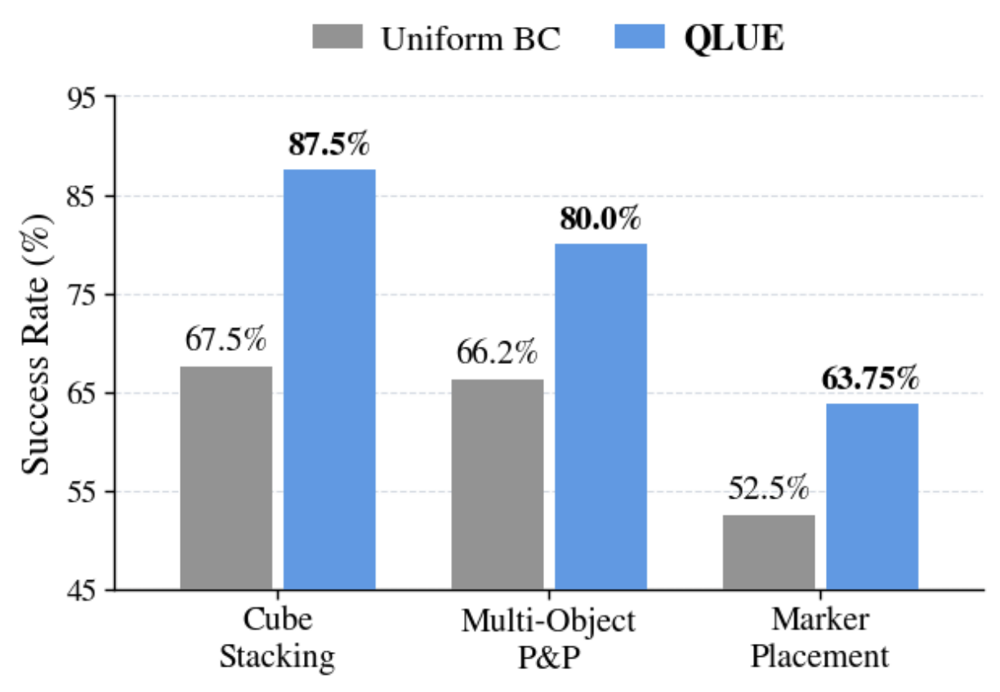
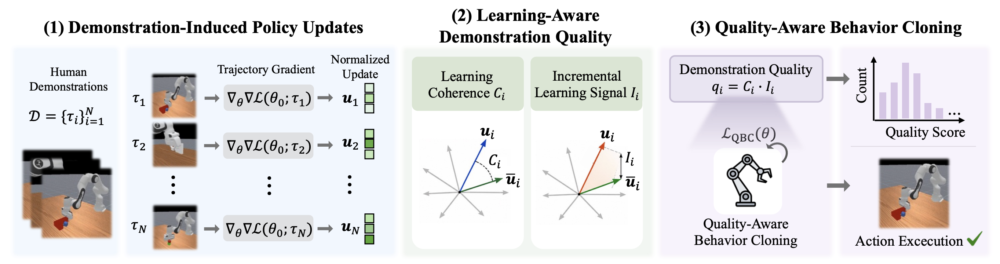
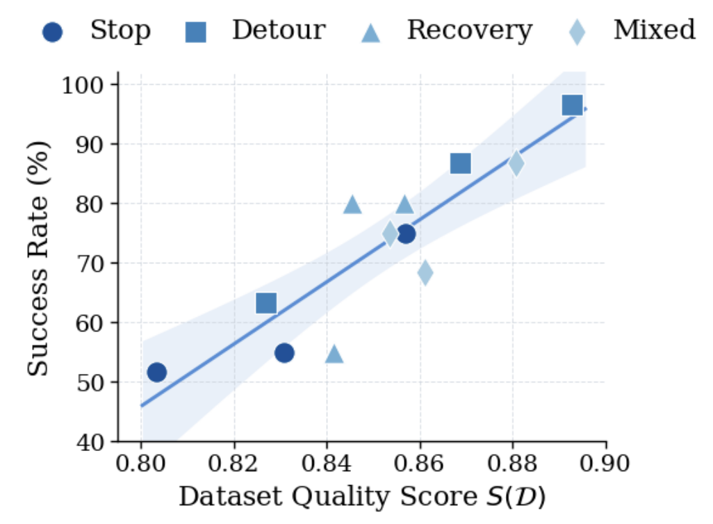
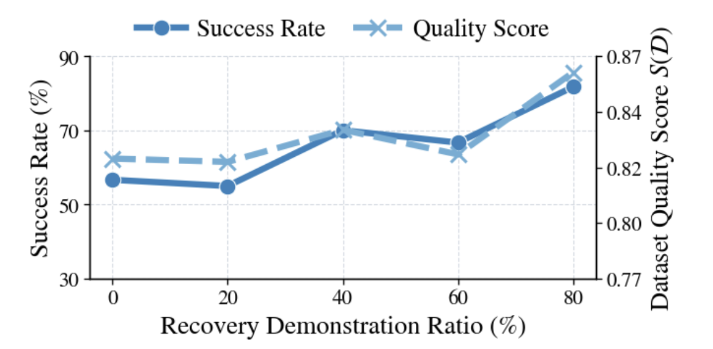
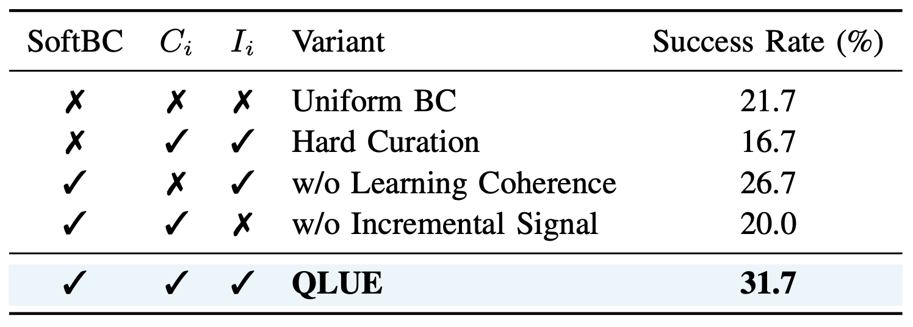

Results
Four ManiSkill3 tasks and three real-world tasks, evaluated with two VLA backbones.


Human teleoperation is costly and produces trajectories with varying execution quality. Behavioral imperfection, however, does not necessarily make a demonstration less useful for learning. We propose QLUE, which adjusts each trajectory's training contribution according to its estimated usefulness while retaining the full collected dataset. QLUE characterizes trajectory-induced policy updates through Learning Coherence and Incremental Learning Signal, which together define a trajectory-level Demonstration Quality Score. On real-world manipulation, QLUE improves average success rate over Uniform BC by 15.0 percentage points, and the quality score tracks downstream BC performance across datasets with different forms of suboptimal behavior.
Quality estimation uses only the collected demonstrations and the pretrained policy, before any downstream training.

Real-world Cube Stacking on the SO-101 arm. All demonstrations complete the task successfully.
Four ManiSkill3 tasks and three real-world tasks, evaluated with two VLA backbones.

The dataset-level score is computed before policy training, without environment evaluation.


ManiSkill3 Cube Stacking with the same quality scores under different usage.

Successful executions of policies trained with QLUE.
Simulation — ManiSkill3Demonstration datasets with controlled suboptimal behavior, released for further research.